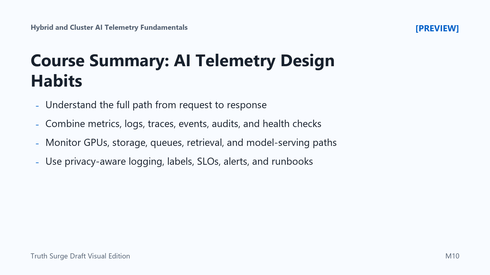

Course Summary: AI Telemetry Design Habits
Connecting to LMS... Progress: in progress

Narration
Hybrid and cluster AI telemetry starts with understanding the full path from user request to model, data, infrastructure, policy, and response. A production AI workflow may cross many systems before it returns an answer. Telemetry should make that path visible enough that teams can connect user experience to model behavior, data freshness, resource pressure, and operational controls.
Use multiple signal types together. Metrics show trends and alertable conditions. Logs explain discrete events. Traces connect distributed work. Events and audit records capture important changes and decisions. Health checks, profiles, resource telemetry, and pipeline signals complete the operating picture. The best telemetry design chooses signals because they answer real questions, not because a platform can emit them.
Specialized AI infrastructure needs special attention. GPUs, accelerators, storage, queues, vector stores, retrieval indexes, model gateways, and batch pipelines can all influence reliability. Monitor them with enough context to separate capacity, placement, data, retrieval, and model-serving issues. At the same time, protect sensitive data through privacy-aware logging, data minimization, and governed access to telemetry.
Finally, make telemetry usable during pressure. Consistent labels, request IDs, trace IDs, model versions, cluster names, and deployment versions connect scattered signals into a path of investigation. Alerts, SLOs, runbooks, and post-incident reviews turn telemetry into operational readiness. Good AI telemetry is not just more data. It is disciplined evidence that helps teams act responsibly and quickly.